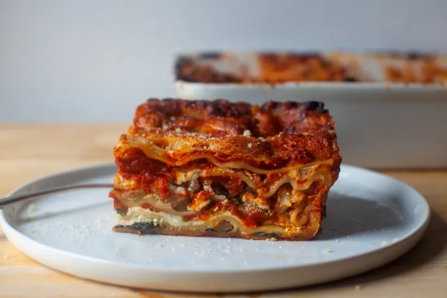

Lasagna alla Bolognese

Description
Who doesn't love a good weekend Pasta alla Bolognese? This particular Ragu is a recipe that I learned off my
Nonna, and lord, does it taste delicious. It's definitely a weekend recipe, as we have to let it simmer for a
good four hours. So clear your schedule if you want to make this bad boy correctly.
Ingredients
- 400g beef mince, 80/20
- 400g pork/veal mince
- 40g carrot
- 40g onion
- 40g celery
- 4 cloves garlic
- 40g extra virgin olive oil
- 70g tomato paste
- 250mL white wine
- 400g polpa
- 250mL chicken stock
Steps
- Heat the olive oil in a heavy bottom pot over medium heat, as you chop up your carrot, onion and celery into
small cubes off roughly the same size and finely mince the garlic
- Once the oil is heated, throw in your carrot, onion and celery to begin your Soffrito. Turn the heat down to
low, and stir occassionally so it does not burn. Cook until translucent and very soft.
- Add the garlic, and stir till fragrant, being careful not to let the garlic burn.
- Add in all of the mince, pressing it to the bottom of the pan. Breakup the meat and stir occassionally,
letting all of the mince brown evenly. It will sound like boiling for awhile until the water has evaporated,
at which point you'll hear meat sizzling.